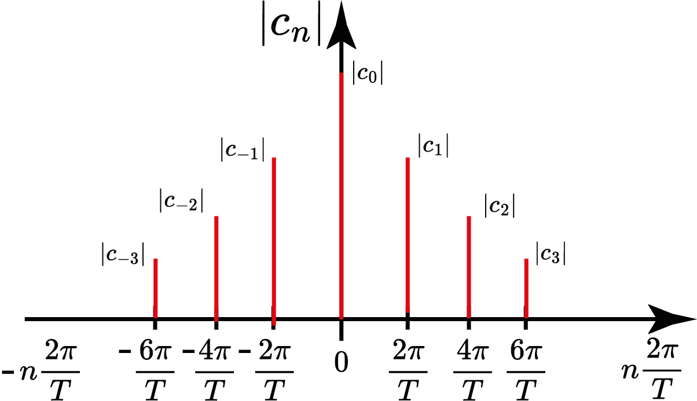
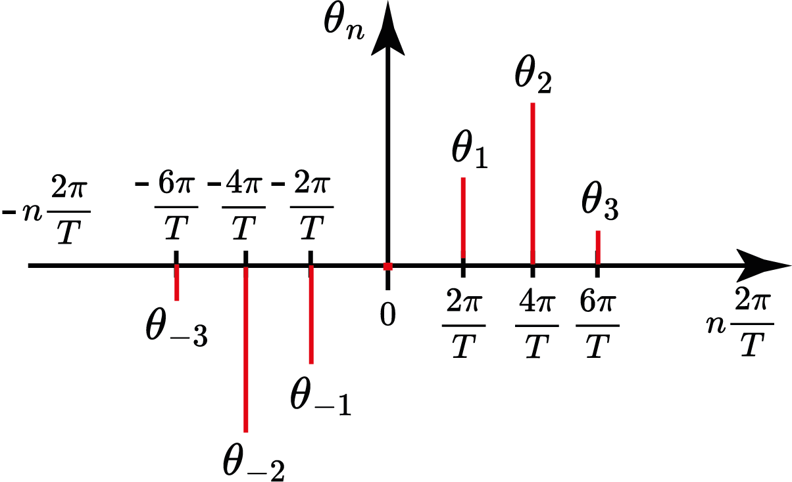
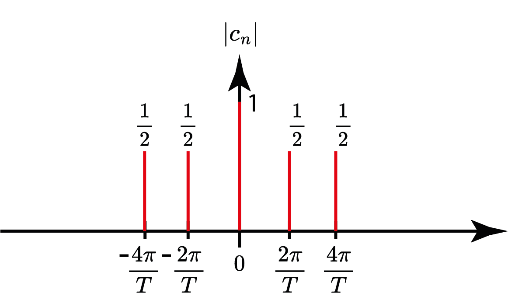
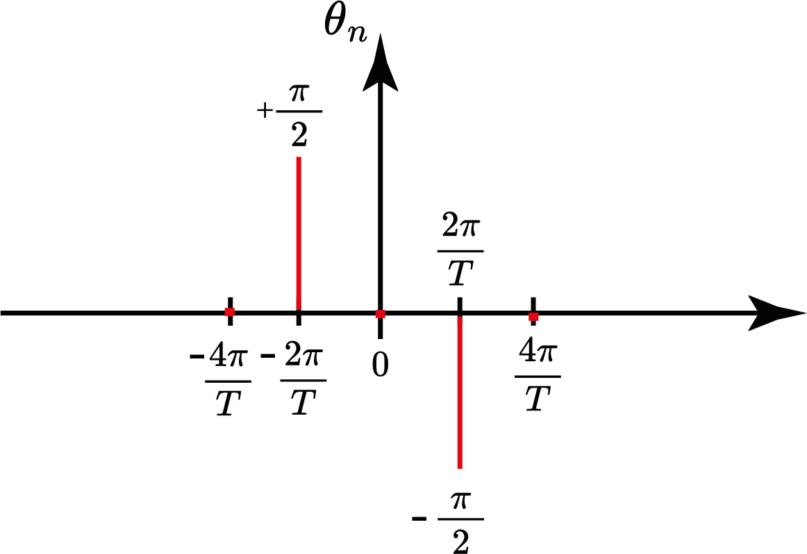

Aula 6:
Espectro de Fourier: exemplos e propriedades
SEL0383
Prof. Marcos Rogério Fernandes
19 de agosto de 2025
Contribuição de Fourier
(1768-1830)
Todo sinal periódico (absolutamente integrável e com número finito de máximos e mínimos) pode ser representado através da soma de cossenos e senos.
Série de Fourier (cossenos e senos)
$$ g(t)=a_0+\sum_{n=1}^\infty a_n\cos(n\omega_0t)+b_n\sin(n\omega_0t) $$
Base de Fourier
$$ B=\{1,\cos(n\omega_0t),\sin(n\omega_0t),\forall n\in\mathbb{N}\} $$
Coeficientes de Fourier
Coeficientes de Fourier
Série de Fourier (Exponencial Complexa)
$$ g(t)=\sum_{n=-\infty}^\infty c_n e^{jn\omega_0t} $$
em que$$ c_n=\frac{a_n-jb_n}{2} $$
Representação de Fourier
$$ G=\Bigl\{g_n(t)=e^{jn\omega_0 t}:\omega_0=\frac{2\pi}{T}, n\in\mathbb{Z}\Bigr\} $$
$$ \langle e^{jn\omega_0 t}, e^{jm\omega_0 t} \rangle = \begin{cases} T, \text{ se } n=m\\ 0, \text{ caso contrário.} \end{cases} $$É uma base ortogonal!
Representação de Fourier
$$ G=\Bigl\{g_n(t)=e^{jn\omega_0 t}:\omega_0=\frac{2\pi}{T}, n\in\mathbb{Z}\Bigr\} $$
$$ g(t)=\sum_{n=-\infty}^\infty c_n e^{jn\omega_0 t},\quad g:\mathbb{R}\to\mathbb{C} $$$$ c_n=\frac{\langle g, e^{jn\omega_0 t}\rangle^* }{\|e^{jn\omega_0 t}\|^2}=\frac{1}{T}\int_0^T g(t)e^{-jn\omega_0 t}dt $$
Representação de Fourier (Real)
Seja $g:\mathbb{R}\to\mathbb{R}$, uma função periódica, de período $T$, então
$$ g(t)=c_0+\sum_{n=1}^\infty 2\mathcal{Re}\Bigl(c_n e^{jn\omega_0 t}\Bigr) $$Objetivos
- Espectro de Fourier
- Teorema de Parseval;
- Propriedades da Série de Fourier;
- *Exemplos
Espectro de Fourier
$$ c_n=|c_n|e^{j\theta_n} $$
Espectro de Fourier: módulo
$$ c_n=|c_n|e^{j\theta_n} $$
Espectro de Fourier: fase
$$ c_n=|c_n|e^{j\theta_n} $$
Espectro de Fourier: exemplo
$$ g(t)=1+\sin(\omega_0 t)+\cos(2\omega_0t),\quad \omega_0=\frac{2\pi}{T} $$
Obtenha o espectro de módulo e fase de $g(t)$
Espectro de Fourier: exemplo
$$ g(t)=1+\sin(\omega_0 t)+\cos(2\omega_0t),\quad \omega_0=\frac{2\pi}{T} $$
$$ g(t)=1+2\mathcal{Re}\Bigl\{\frac{1}{2}e^{-j\frac{\pi}{2}}e^{j\omega_0t}+\frac{1}{2}e^{j2\omega_0 t}\Bigr\} $$ $$ \Rightarrow |c_0|=1;\quad |c_1|=|c_{-1}|=\frac{1}{2};\quad |c_2|=|c_{-2}|=\frac{1}{2}; \\ \Rightarrow \theta_0=0;\quad \theta_1=-\frac{\pi}{2};\quad \theta_{-1}=+\frac{\pi}{2};\quad \theta_{2}=\theta_{-2}=0; $$Espectro de Fourier: módulo
$ g(t)=1+\sin(\omega_0 t)+\cos(2\omega_0t),\quad \omega_0=\frac{2\pi}{T} $
Espectro de Fourier: fase
$ g(t)=1+\sin(\omega_0 t)+\cos(2\omega_0t),\quad \omega_0=\frac{2\pi}{T} $
Propriedades da Série de Fourier
Propriedades da Série de Fourier
Propriedades da Série de Fourier
$$ c_n^*=c_{-n} $$
$$ |c_n|=|c_{-n}| \quad \text{e}\quad \theta_n=-\theta_{-n} $$
Propriedades da Série de Fourier
Propriedades da Série de Fourier
$$ c_n=\begin{cases} \in\mathbb{R}, \text{se } g(t) \text{ é par}, \\ \text{puramente imaginário}, \text{ se } g(t) \text{ é ímpar.} \end{cases} $$
Parte II
Valor Eficaz
$$ \|g(t)\|_\text{efz}=\sqrt{\frac{1}{T}\int_0^T |g(t)|^2dt}=\frac{1}{\sqrt{T}}\|g(t)\| $$
Eficaz=RMS=Root Mean Square
$$ P_\text{med}=\|g(t)\|_\text{efz}^2 $$Teorema de Parseval
$$ \|g(t)\|^2_\text{efz}=\sum_{n=-\infty}^\infty |c_n|^2 $$
Teorema de Parseval: prova
$$ \|g(t)\|^2_\text{efz}=\frac{1}{T}\int_{0}^T g^*(t)g(t)dt $$
Teorema de Parseval: prova
$$ \|g(t)\|^2_\text{efz}=\frac{1}{T}\int_{-\infty}^\infty g^*(t)g(t)dt $$
$$ = \frac{1}{T}\int_{-\infty}^\infty \Bigl(\sum_{n=-\infty}^\infty c_ne^{jn\omega_0 t}\Bigr)^*\Bigl(\sum_{k=-\infty}^\infty c_ke^{jk\omega_0 t}\Bigl)dt $$ $$ = \sum_{n=-\infty}^\infty c_n^*c_n \quad\square $$Teorema de Parseval: exemplo
$$ g(t)=1+\sin(\omega_0 t)+\cos(2\omega_0t),\quad \omega_0=\frac{2\pi}{T} $$
Obtenha o valor eficaz de $g(t)$
$$ \|g(t)\|^2_\text{efz}=? $$Espectro de Fourier: módulo
Espectro de Fourier: módulo
Propriedades da Série de Fourier
$$ \mathcal{S}_F\{g(t)\}=c_n,\quad \mathcal{S}_F\{h(t)\}=d_n $$
Em que, $c_n$ corresponde ao n-ésimo coeficiente da série de Fourier de $g(t)$, e $d_n$ ao n-ésimo coeficiente da série de Fourier de $h(t)$.
Propriedades da Série de Fourier
- Linearidade: $$ \mathcal{S}_F\{\alpha g(t)+\beta h(t)\}=\alpha c_n+\beta d_n $$
- Deslocamento no tempo: $$ \mathcal{S}_F\{g(t-t_0)\}=e^{-jn\omega_0 t_0}c_n $$
- Deslocamento na frequência: $$ \mathcal{S}_F\{e^{jm\omega_0 t}g(t)\}=c_{n-m} $$
Propriedades da Série de Fourier
- Inversão no tempo: $$ \mathcal{S}_F\{g(-t)\}=c_{-n} $$
- Convolução periódica: $$ \mathcal{S}_F\{g(t)\ast h(t)\}=Tc_n d_n $$
Propriedades da Série de Fourier
- Multiplicação no tempo: $$ \mathcal{S}_F\{g(t)h(t)\}=\sum_{l=-\infty}^\infty c_l d_{n-l} $$
- Derivadas $$ \mathcal{S}_F\Bigl\{\frac{dg}{dt}\Bigr\}=jn\omega_0 c_n $$
Exemplo:
Próxima aula
Exemplos e aplicações das séries de Fourier